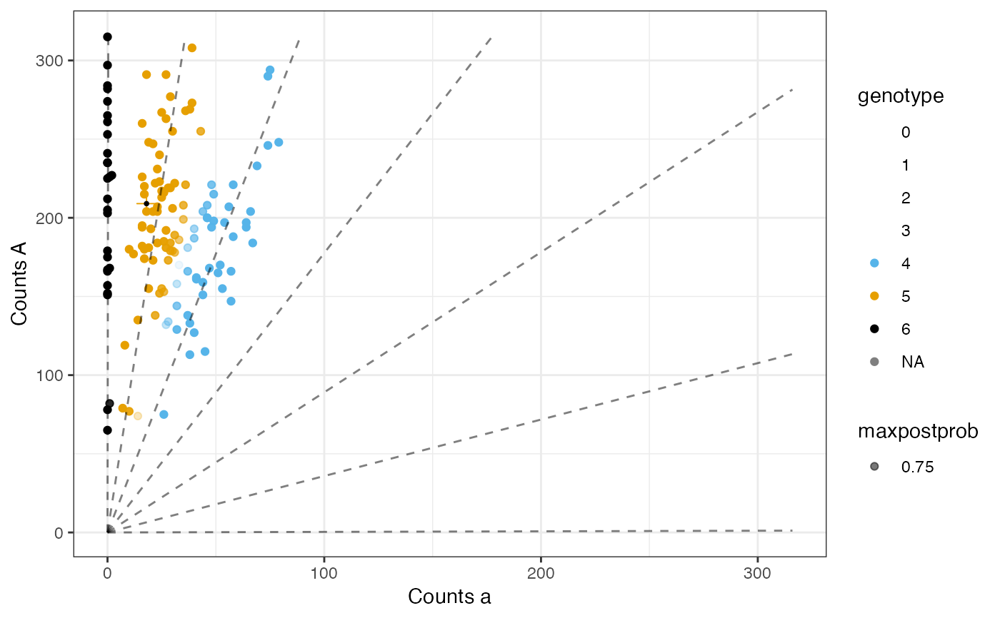

Flexible genotyping for polyploids from next-generation sequencing data.
Source:R/ashdog.R
flexdog.RdGenotype polyploid individuals from next generation
sequencing (NGS) data while assuming the genotype distribution is one of
several forms. flexdog does this while accounting for allele bias,
overdispersion, sequencing error. The method is described
in detail in Gerard et. al. (2018) and Gerard and Ferrão (2020). See
multidog() for running flexdog on multiple SNPs in parallel.
flexdog( refvec, sizevec, ploidy, model = c("norm", "hw", "bb", "s1", "s1pp", "f1", "f1pp", "flex", "uniform", "custom"), p1ref = NULL, p1size = NULL, p2ref = NULL, p2size = NULL, snpname = NULL, bias_init = exp(c(-1, -0.5, 0, 0.5, 1)), verbose = TRUE, prior_vec = NULL, ... )
Arguments
| refvec | A vector of counts of reads of the reference allele. |
|---|---|
| sizevec | A vector of total counts. |
| ploidy | The ploidy of the species. Assumed to be the same for each individual. |
| model | What form should the prior (genotype distribution) take? See Details for possible values. |
| p1ref | The reference counts for the first parent if
|
| p1size | The total counts for the first parent if
|
| p2ref | The reference counts for the second parent if
|
| p2size | The total counts for the second parent if
|
| snpname | A string. The name of the SNP under consideration.
This is just returned in the |
| bias_init | A vector of initial values for the bias parameter
over the multiple runs of |
| verbose | Should we output more ( |
| prior_vec | The pre-specified genotype distribution. Only used if
|
| ... | Additional parameters to pass to |
Value
An object of class flexdog, which consists
of a list with some or all of the following elements:
biasThe estimated bias parameter.
seqThe estimated sequencing error rate.
odThe estimated overdispersion parameter.
num_iterThe number of EM iterations ran. You should be wary if this equals
itermax.llikeThe maximum marginal log-likelihood.
postmatA matrix of posterior probabilities of each genotype for each individual. The rows index the individuals and the columns index the allele dosage.
genologlikeA matrix of genotype log-likelihoods of each genotype for each individual. The rows index the individuals and the columns index the allele dosage.
gene_distThe estimated genotype distribution. The
ith element is the proportion of individuals with genotypei-1.parA list of the final estimates of the parameters of the genotype distribution. The elements included in
pardepends on the value ofmodel:model = "norm":mu:The normal mean.
sigma:The normal standard deviation (not variance).
model = "hw":alpha:The major allele frequency.
model = "bb":alpha:The major allele frequency.
tau:The overdispersion parameter. See the description of
rhoin the Details ofbetabinom().
model = "s1":pgeno:The allele dosage of the parent.
alpha:The mixture proportion of the discrete uniform (included and fixed at a small value mostly for numerical stability reasons). See the description of
fs1_alphainflexdog_full().
model = "f1":p1geno:The allele dosage of the first parent.
p2geno:The allele dosage of the second parent.
alpha:The mixture proportion of the discrete uniform (included and fixed at a small value mostly for numerical stability reasons). See the description of
fs1_alphainflexdog_full().
model = "s1pp":ell1:The estimated dosage of the parent.
tau1:The estimated double reduction parameter of the parent. Available if
ell1is1,2, or3. Identified ifell1is1or3.gamma1:The estimated preferential pairing parameter. Available if
ell1is2. However, it is not returned in an identified form.alpha:The mixture proportion of the discrete uniform (included and fixed at a small value mostly for numerical stability reasons). See the description of
fs1_alphainflexdog_full().
model = "f1pp":ell1:The estimated dosage of parent 1.
ell2:The estimated dosage of parent 2.
tau1:The estimated double reduction parameter of parent 1. Available if
ell1is1,2, or3. Identified ifell1is1or3.tau2:The estimated double reduction parameter of parent 2. Available if
ell2is1,2, or3. Identified ifell2is1or3.gamma1:The estimated preferential pairing parameter of parent 1. Available if
ell1is2. However, it is not returned in an identified form.gamma2:The estimated preferential pairing parameter of parent 2. Available if
ell2is2. However, it is not returned in an identified form.alpha:The mixture proportion of the discrete uniform (included and fixed at a small value mostly for numerical stability reasons). See the description of
fs1_alphainflexdog_full().
model = "flex":paris an empty list.model = "uniform":paris an empty list.model = "custom":paris an empty list.
genoThe posterior mode genotype. These are your genotype estimates.
maxpostprobThe maximum posterior probability. This is equivalent to the posterior probability of correctly genotyping each individual.
postmeanThe posterior mean genotype. In downstream association studies, you might want to consider using these estimates.
input$refvecThe value of
refvecprovided by the user.input$sizevecThe value of
sizevecprovided by the user.input$ploidyThe value of
ploidyprovided by the user.input$modelThe value of
modelprovided by the user.input$p1refThe value of
p1refprovided by the user.input$p1sizeThe value of
p1sizeprovided by the user.input$p2refThe value of
p2refprovided by the user.input$p2sizeThe value of
p2sizeprovided by the user.input$snpnameThe value of
snpnameprovided by the user.prop_misThe posterior proportion of individuals genotyped incorrectly.
Details
Possible values of the genotype distribution (values of model) are:
"norm"A distribution whose genotype frequencies are proportional to the density value of a normal with some mean and some standard deviation. Unlike the
"bb"and"hw"options, this will allow for distributions both more and less dispersed than a binomial. This seems to be the most robust to violations in modeling assumptions, and so is the default. This prior class was developed in Gerard and Ferrão (2020)."hw"A binomial distribution that results from assuming that the population is in Hardy-Weinberg equilibrium (HWE). This actually does pretty well even when there are minor to moderate deviations from HWE. Though it does not perform as well as the `"norm"` option when there are severe deviations from HWE.
"bb"A beta-binomial distribution. This is an overdispersed version of
"hw"and can be derived from a special case of the Balding-Nichols model."s1"This prior assumes the individuals are all full-siblings resulting from one generation of selfing. I.e. there is only one parent. This model assumes a particular type of meiotic behavior: polysomic inheritance with bivalent, non-preferential pairing.
"f1"This prior assumes the individuals are all full-siblings resulting from one generation of a bi-parental cross. This model assumes a particular type of meiotic behavior: polysomic inheritance with bivalent, non-preferential pairing.
"f1pp"This prior allows for double reduction and preferential pairing in an F1 population of tretraploids.
"s1pp"This prior allows for double reduction and preferential pairing in an S1 population of tretraploids.
"flex"Generically any categorical distribution. Theoretically, this works well if you have a lot of individuals. In practice, it seems to be much less robust to violations in modeling assumptions.
"uniform"A discrete uniform distribution. This should never be used in practice.
"custom"A pre-specified prior distribution. You specify it using the
prior_vecargument. You should almost never use this option in practice.
You might think a good default is model = "uniform" because it is
somehow an "uninformative prior." But it is very informative and tends to
work horribly in practice. The intuition is that it will estimate
the allele bias and sequencing error rates so that the estimated genotypes
are approximately uniform (since we are assuming that they are approximately
uniform). This will usually result in unintuitive genotyping since most
populations don't have a uniform genotype distribution.
I include it as an option only for completeness. Please don't use it.
The value of prop_mis is a very intuitive measure for
the quality of the SNP. prop_mis is the posterior
proportion of individuals mis-genotyped. So if you want only SNPS
that accurately genotype, say, 95% of the individuals, you could
discard all SNPs with a prop_mis over 0.05.
The value of maxpostprob is a very intuitive measure
for the quality of the genotype estimate of an individual.
This is the posterior probability of correctly genotyping
the individual when using geno (the posterior mode)
as the genotype estimate. So if you want to correctly genotype,
say, 95% of individuals, you could discard all individuals
with a maxpostprob of under 0.95. However, if you are
just going to impute missing genotypes later, you might consider
not discarding any individuals as flexdog's genotype estimates will
probably be more accurate than other more naive approaches, such
as imputing using the grand mean.
In most datasets I've examined, allelic bias is a major issue. However,
you may fit the model assuming no allelic bias by setting
update_bias = FALSE and bias_init = 1.
Prior to using flexdog, during the read-mapping step,
you could try to get rid of allelic bias by
using WASP (doi: 10.1101/011221
). If you are successful
in removing the allelic bias (because its only source was the read-mapping
step), then setting update_bias = FALSE and bias_init = 1
would be reasonable. You can visually inspect SNPs for bias by
using plot_geno().
flexdog(), like most methods, is invariant to which allele you
label as the "reference" and which you label as the "alternative".
That is, if you set refvec with the number of alternative
read-counts, then the resulting genotype estimates
will be the estimated allele dosage of the alternative allele.
References
Gerard, D., Ferrão, L. F. V., Garcia, A. A. F., & Stephens, M. (2018). Genotyping Polyploids from Messy Sequencing Data. Genetics, 210(3), 789-807. doi: 10.1534/genetics.118.301468 .
Gerard, David, and Luís Felipe Ventorim Ferrão. "Priors for genotyping polyploids." Bioinformatics 36, no. 6 (2020): 1795-1800. doi: 10.1093/bioinformatics/btz852 .
See also
Run browseVignettes(package = "updog") in R for example usage.
Other useful functions include:
multidog()For running
flexdog()on multiple SNPs in parallel.flexdog_full()For additional parameter options when running
flexdog().rgeno()For simulating genotypes under the allowable prior models in
flexdog().rflexdog()For simulating read-counts under the assumed likelihood model in
flexdog().plot.flexdog()For plotting the output of
flexdog().oracle_mis()For calculating the oracle genotyping error rates. This is useful for read-depth calculations before collecting data. After you have data, using the value of
prop_misis better.oracle_cor()For calculating the correlation between the true genotypes and an oracle estimator (useful for read-depth calculations before collecting data).
Author
David Gerard
Examples
# \donttest{ ## An S1 population where the first individual ## is the parent. data("snpdat") ploidy <- 6 refvec <- snpdat$counts[snpdat$snp == "SNP2"] sizevec <- snpdat$size[snpdat$snp == "SNP2"] fout <- flexdog(refvec = refvec[-1], sizevec = sizevec[-1], ploidy = ploidy, model = "s1", p1ref = refvec[1], p1size = sizevec[1])#> Fit: 1 of 5 #> Initial Bias: 0.3678794 #> Log-Likelihood: -557.6433 #> Keeping new fit. #> #> Fit: 2 of 5 #> Initial Bias: 0.6065307 #> Log-Likelihood: -519.2793 #> Keeping new fit. #> #> Fit: 3 of 5 #> Initial Bias: 1 #> Log-Likelihood: -519.2793 #> Keeping old fit. #> #> Fit: 4 of 5 #> Initial Bias: 1.648721 #> Log-Likelihood: -519.2793 #> Keeping new fit. #> #> Fit: 5 of 5 #> Initial Bias: 2.718282 #> Log-Likelihood: -519.2793 #> Keeping new fit. #> #> Done!#> Warning: Removed 1 rows containing missing values (geom_point).# } ## A natural population. We will assume a ## normal prior since there are so few ## individuals. data("uitdewilligen") ploidy <- 4 refvec <- uitdewilligen$refmat[, 1] sizevec <- uitdewilligen$sizemat[, 1] fout <- flexdog(refvec = refvec, sizevec = sizevec, ploidy = ploidy, model = "norm")#> Fit: 1 of 5 #> Initial Bias: 0.3678794 #> Log-Likelihood: -14.66905 #> Keeping new fit. #> #> Fit: 2 of 5 #> Initial Bias: 0.6065307 #> Log-Likelihood: -14.66905 #> Keeping new fit. #> #> Fit: 3 of 5 #> Initial Bias: 1 #> Log-Likelihood: -15.44144 #> Keeping old fit. #> #> Fit: 4 of 5 #> Initial Bias: 1.648721 #> Log-Likelihood: -15.44141 #> Keeping old fit. #> #> Fit: 5 of 5 #> Initial Bias: 2.718282 #> Log-Likelihood: -15.44141 #> Keeping old fit. #> #> Done!